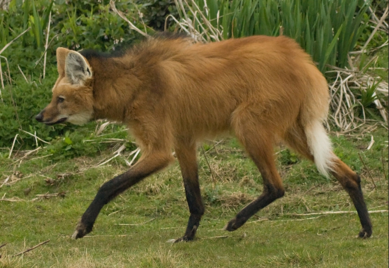

The Maned Wolf
The Maned Wolf (Chrysocyon Brachyurus) is a canid with thick red fur, large ears, and long black legs (aroung 3 feet at the shoulders) adapted to the tall grasses of savannas. Despite its name and fur markings, the maned wolf is not related to wolves or foxes, but rather they are the only species in the genus Chrysocyon.

Where Are They Found?
Maned wolves are found throughout South Amercia, including:
- Northern Argentina
- South and Central Brazil
- Paraguay
- Bolivia
- Southern Peru
They live in the cerrado biome which is made up of forests, grasslands, savannas, marshes, and wetlands.
What Do They Eat?
Maned Wolves are omnivores. They eat small prey, berries, and vegetables. They are solitary hunters.
How Do They Hunt?
- Rotate their large, erect ears to listen and locate prey.
- Tap front foot to flush out prey.
- Pounce to catch and kill their prey.
Maned wolves may also dig after burrowing prey or leap into the air to catch flying prey.